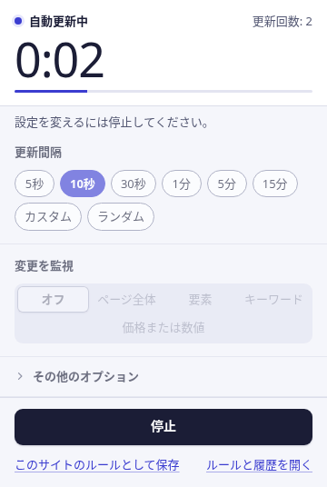
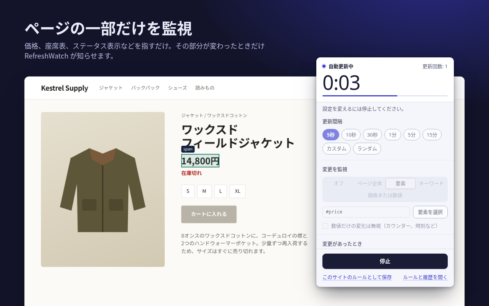
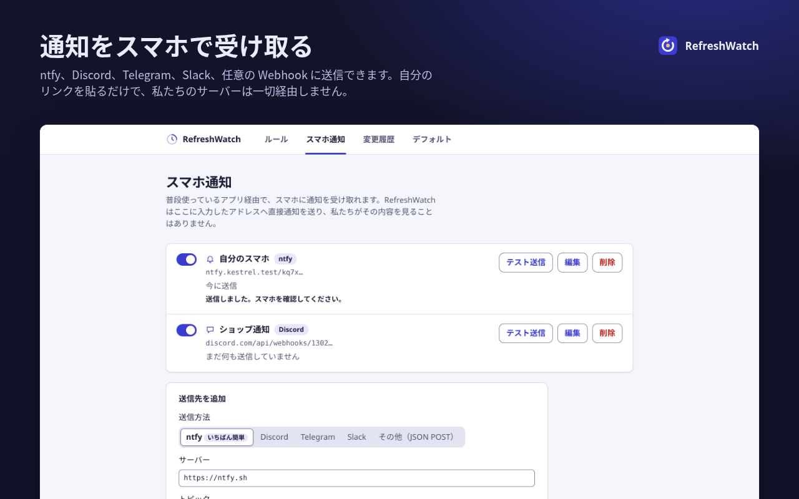
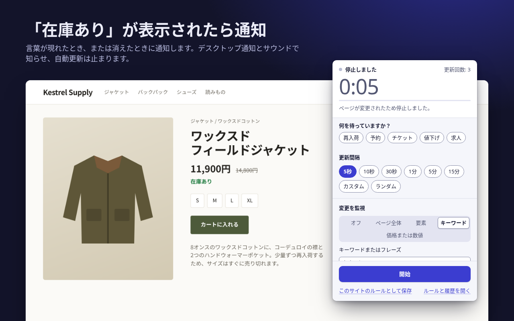

更新はおまかせ。変化は見逃さない。
RefreshWatch は Chrome のタブをタイマーで再読み込みし、ページが変わった瞬間にお知らせします。新しい価格、「在庫あり」の表示、空いた予約枠など。
アカウント不要。私たちのサーバーも使いません。Chrome 120 以降に対応。

何を監視するか、指定するだけ
単純な自動更新なら、間隔を選ぶだけで使えます。監視を追加すると、RefreshWatch は再読み込みのたびにページを比較し、変化があれば通知とサウンドでお知らせします。
ページ全体
表示テキストのあらゆる変化を検知します。「数値だけの変化は無視」をオンにすれば、時計やカウンターで誤って通知されることはありません。
1 つの要素
価格、座席表、ステータス表示などを指定します。対象はその部分だけなので、ページのほかの場所が変わっても反応しません。
キーワード
「在庫あり」のような言葉が現れたとき、または「予約可能な日時がありません」のような表示が消えたときに通知します。

スマホへの通知と、値下がりアラート
自分の ntfy トピック、Discord、Telegram、Slack のアドレス、または任意の Webhook を追加すると、RefreshWatch がそこへ直接通知を送ります。アカウント登録は不要で、私たちのサーバーを経由することもありません。

ほかの拡張機能では有料の機能も、すべて無料
以下の機能はどれも、人気の自動更新やページ監視の拡張機能の少なくとも 1 つでは有料プランでしか使えません。RefreshWatch では最初から含まれていて、有料プランも試用期間もアカウントもありません。なお、マクロ、メールや SMS での通知、クラウドでのチェックなど、ほかで有料になっている機能の一部は、RefreshWatch にはそもそもありません。
| 機能 | できること | RefreshWatch |
|---|---|---|
| ページの一部だけを監視 | 好きな要素を選び、その部分が変わったときだけ通知 | 無料 |
| キーワード通知 | 言葉やフレーズが現れたとき、または消えたとき | 無料 |
| 再読み込み後にボタンをクリック | クリックするボタンと待ち時間を指定 | 無料 |
| ランダム間隔 | 2 つの値の間でランダムに。1 秒から 24 時間まで | 無料 |
| ページごとに設定を保存 | 完全一致の URL、前方一致、ワイルドカードのルールで自動スタート | 無料 |
| 監視数の上限なし | タブもルールも好きなだけ | 無料 |
| 変更履歴 | 直近 50 件の変更を、変更前後のテキストとともに記録 | 無料 |
Chrome ウェブストアと各社の料金ページに掲載されている有料プランとの比較です（2026 年 10 月 9 日時点）。ある有名な拡張機能との詳しい比較は代替ツールのページ（英語）で紹介しています。
データは私たちを経由しません
RefreshWatch はページの読み取りと比較をすべてお使いのパソコン上で行います。独自のサーバーは持っていません。外部に送るのは、あなたが自分で設定したスマホ通知の送信先への通知だけです。
- アカウント不要インストールしたらすぐに使えます。登録するものは何もありません。
- 分析・広告・トラッキングなしネットワーク通信は、設定したスマホ通知の送信以外に一切ありません。
- サイトへのアクセスは 1 サイトずつ単純な自動更新にはサイトへのアクセスは不要です。あるサイトで監視をオンにすると、Chrome がそのサイトについてだけ許可を求めます。
- データはパソコン内に保存ルール、設定、変更履歴はこのパソコンの Chrome 内に保存され、拡張機能を削除すると消去されます。
タブを開いてから通知まで、3 ステップ
間隔を選ぶ
タブで RefreshWatch のアイコンをクリックし、5 秒〜15 分、カスタム時間、またはランダムな範囲から選びます。
監視する対象を選ぶ
ページ全体、指定した 1 つの要素、またはキーワード。何も選ばなければ、単純な自動更新になります。
通知を受け取る
変化があると通知とサウンドでお知らせし、自動更新は止まります。ルールとして保存しておけば、次回からは自動で始まります。

もう、更新ボタンを押し続けなくていい
Chrome ウェブストアで無料公開中。対応言語：英語、アラビア語、ドイツ語、スペイン語、フランス語、日本語、ポルトガル語（ブラジル）、中国語（簡体字）、ロシア語。